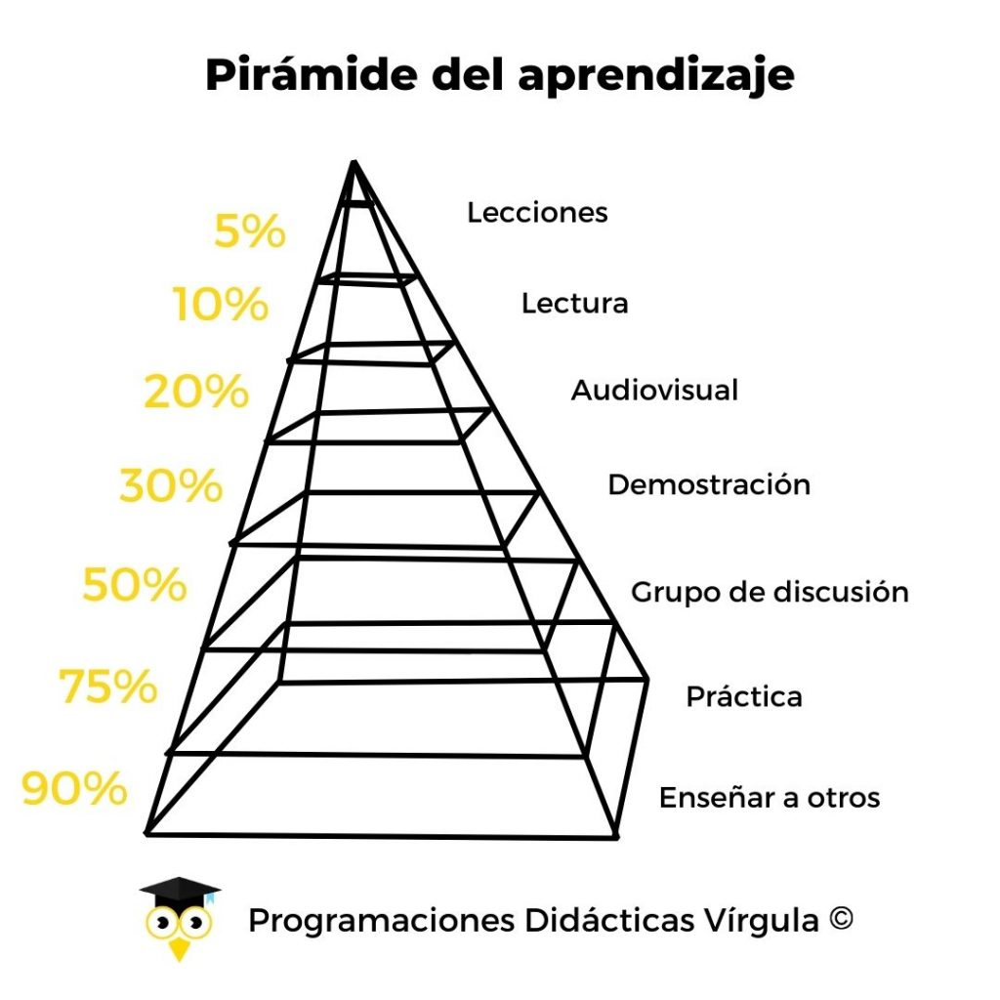

5 metodologías de aprendizaje que no pueden faltar en tu programación didáctica
La metodología de tu programación didáctica refleja tu manera de enseñar y, en gran medida, determinará si consigues la plaza. Así que debes asegurarte de llevar una propuesta fuerte, con metodologías de aprendizaje interesantes y bien argumentadas. Veamos cómo sacarle el máximo partido a este apartado de la programación.
Metodologías de aprendizaje para desarrollar las competencias
Actualmente, programamos por competencias, lo que quiere decir que son el núcleo de la programación didáctica, de las situaciones de aprendizaje y del trabajo diario en el aula. Por tanto, no necesitamos buscar una metodología propia que desarrolle las competencias, sino que todas las metodologías se orientarán a ello.
Estas metodologías de aprendizaje pueden ser complementadas por otras que tú quieras añadir a tus clases. La pregunta que debes hacerte es: ¿esta metodología ayuda a desarrollar las competencias? Y ¿cómo lo hace?
Veamos nuestras 5 metodologías básicas para cualquier programación didáctica y cómo permiten desarrollar las competencias en cualquier nivel y materia.
Metodología motivadora
La RAE define motivación como:
3. f. Conjunto de factores internos o externos que determinan en parte las acciones de una persona.
Y motivar como:
4. tr. Estimular a alguien o despertar su interés.
Por tanto, podemos entender la motivación como aquello que empuja al alumno a actuar. Y esto lo conseguimos despertando su interés.
Para ello, resulta lógico que debemos conocer los intereses de nuestros alumnos, así que anímate a hacer una evaluación diagnóstica, a observar qué les interesa e incluso preguntarles directamente.
Si entramos un poco más en detalle a entender cómo funciona la motivación, encontramos el siguiente ciclo:

En consecuencia, debemos aplicar un estímulo que saque del equilibrio (o del reposo mental) a nuestros alumnos. Debemos crearles una necesidad, ya sea de aprendizaje o para resolver una situación. Eso les llevará a la acción y solo cuando concluyan la actividad lograrán ese estado de satisfacción que les devuelva al equilibrio.
Ahora bien, ¿cómo podemos despertar ese interés? Según Bruner (1996), hay 3 formas:
- Curiosidad: ofrece algo novedoso y empuja a actuar en juegos o actividades de exploración donde el aprendizaje se va construyendo paso a paso. Un ejemplo es la resolución de un crimen.
- Competencia: despierta la necesidad de controlar el ambiente, fomentando el trabajo y el rendimiento. Un ejemplo es una simulación en la que está ardiendo una casa y los alumnos deben encontrar la manera de apagar el fuego.
- Reciprocidad: en este caso se despierta la necesidad de actuar de acuerdo a lo que demanda la situación. El ejemplo anterior también valdría aquí, pero veamos otro: tenemos una caja cerrada con llave. La llave que abre la caja la conseguirá un grupo de alumnos al completar ciertas tareas. Ese grupo, al final de la actividad, debe usar la llave para abrir la caja. Así, todos lograrán descubrir qué guardaba esa caja, lo cual satisface su curiosidad y vuelven al estado de equilibrio, pero después de haber aprendido.
Recuerda que sentirse parte de un grupo siempre va a influir en un mejor rendimiento del alumno. Una retroalimentación positiva y constructiva por parte del profesor, así como resultados finales a los que se espera que el alumno llegue… Todo esto va a fomentar el aprendizaje gracias a la motivación.
Metodología expositiva
En los últimos años se ha abogado mucho por las metodologías activas, hasta tal punto que la propia legislación educativa nos obliga a usarlas. Y eso está perfecto. Pero también es cierto que las metodologías activas no tienen por qué ser las únicas ni debemos renunciar a otras metodologías más clásicas.
La metodología expositiva es aquella en la que el docente presenta unos contenidos, haciéndolos comprensibles para el alumno. Lo que toda la vida se ha entendido como “explicar”.
Esta técnica genera problemas cuando es unidireccional y se alarga demasiado en el tiempo. ¿Qué quiere decir unidireccional? Que el profesor “suelta el rollo” sin tener en cuenta si el alumno “se está enterando de algo”. Debemos aplicar esta técnica de manera interactiva, haciendo partícipe al grupo con preguntas intercaladas, con ejemplos, dejando que ellos presenten parte de la información, etc. De esta manera, captamos y mantenemos su atención a la vez que su rol pasivo pasa a ser activo. Pero no es algo que vaya a suceder solo por arte de magia; debemos provocarlo nosotros.
Por otra parte, la metodología expositiva se vuelve problemática cuando esas explicaciones son demasiado largas. Todos hemos escuchado alguna vez que la atención dura 10-15 minutos… Siento decirte que este número baja cada vez más debido a nuestro modo de vida hiperconectado. La próxima vez que busques un vídeo en YouTube, fíjate en qué segundo cierras ese vídeo para buscar otro.
Sí es cierto que podemos mantener la atención durante un periodo más largo si usamos técnicas para reenganchar a nuestra audiencia. Por eso podemos permanecer 2 horas delante de una pantalla viendo una película sin perder el interés (a veces: solo cuando usan técnicas efectivas con las que mantener el interés).
Por todo ello, la exposición es una buena metodología con la que avanzar materia, siempre que mantengamos la atención del alumno y no alarguemos esas explicaciones más de 15-20 minutos. Trata de romper el patrón, intercalar actividades, debates, etc., con los que el alumno se mantenga siempre conectado a la clase.
Sorpresa
Precisamente para romper el patrón necesitamos las sorpresas. Puede ser algún tipo de objeto que lleves un día a clase o puede ser una actividad que no suelas hacer y un día uses para romper con la rutina. ¡Échale imaginación, puede ser cualquier cosa! Te servirá para despertar el interés y captar la atención, justo lo que veíamos en las dos metodologías anteriores. Benefíciate de las ventajas de todas ellas combinándolas.
Además, las sorpresas nos hacen sentir bien, y cuando nos sentimos bien, aprendemos mejor, como tan bien nos explican Rosa Casafont y Laia Casas en Educarnos para educar: Neuroaprendizaje para transforma la educación.
Aprendizaje basado en el pensamiento
El aprendizaje es un proceso mental complejo, por lo que, además de la motivación, la exposición y la sorpresa, requiere de un trabajo interno propio de cada alumno. En otras palabras, para aprender es necesario pensar. Esta metodología puede parecer redundante, pero si la aprovechamos bien será muy potente. Y te voy a explicar por qué solamente con una imagen:

Cuando generamos debates en clase, obligando al alumno a postular argumentos a favor y en contra, le ayudamos a pensar de manera crítica y con la mente abierta. Es capaz de interiorizar los contenidos que le hemos explicado, de asociar ideas, de investigar en busca de nueva información, de ejemplos,… Está haciendo un trabajo mental que no podríamos lograr con otras actividades más simples (ni siquiera lo conseguiríamos si planteamos mal el debate). Y ¿sabes qué es lo mejor? Que con ello está desarrollando la Competencia en Comunicación Lingüística, la Competencia Digital, las Competencias Sociales y Cívicas, la competencia Aprender a Aprender y el Sentido de la Iniciativa y el Espíritu Emprendedor (como mínimo).
Cuando planteamos un problema o proyecto donde el alumno debe aplicar la teoría a la práctica, le estamos invitando a pensar en una solución. Recuerda que debemos darles las herramientas para resolver esa situación, pero no guiarles paso a paso. En otras palabras, les pondremos el plato en la mesa, pero no se lo daremos masticado. Al pasar de la teoría a la práctica, pasando por la reflexión, ese aprendizaje va a permanecer mucho más tiempo en memoria (incluso de por vida).
Y, por último, cuando llevamos a los alumnos a enseñar a otros (ya sea con una exposición oral o con alumnos-tutores, por ejemplo), esteremos consiguiendo un 90% de retención. ¡Un 90%! Está claro que esta metodología, con sus estrategias y técnicas parejas no puede faltar en una buena programación.
Metodología dialógica
Si te fijas, en metodologías anteriores hemos hablado de exposiciones, debates, preguntas,… Es decir, de diálogo. Y es que es otra metodología fundamental en clase para lograr un aprendizaje significativo.
¿Por qué metodologías de aprendizaje?
Si te fijas, estamos hablando de metodologías de aprendizaje y no de enseñanza. ¿Por qué? Porque nos centramos en que el alumno aprenda. Aún hay opositores que desarrollan su programación didáctica anclada en la clase magistral y la ristra de ejercicios. Esto no vale para nada si no se complementa con otras metodologías. ¿Sabes por qué? Porque ese enfoque está centrado en el docente como figura que posee el conocimiento, y eso ya está desfasado; ahora todo el conocimiento está en Internet.
Las metodologías de aprendizaje fomentan que el alumno aprenda para resolver los problemas del mundo. ¿Y cómo lo hace? Desarrollando las competencias. Así que, cuando diseñas tu programación didáctica, en tu mente debe haber un mapa curricular cuyo centro sean las competencias clave y específicas de tu asignatura.
Además, debes tener en cuenta el contexto, especialmente, las características de tu grupo de alumnos. No es lo mismo enseñarle a niños de 9 años que de 17, en Madrid o en un pueblo de Asturias, en un barrio de nivel alto o medio-bajo,… Todas las metodologías de aprendizaje serán válidas en cualquier contexto, pero siempre habrá que adaptarlas al grupo de alumnos.
Cómo diseñar mis metodologías de aprendizaje
Vayamos al grano, ¿qué pasos sigo para desarrollar mi metodología?
- Ve al currículo y lee las competencias clave y específicas que debes desarrollar en tu asignatura
- Pregúntate ¿cuál es la mejor forma de que mis alumnos aprendan esto?
- Haz una lluvia de ideas a partir de las 5 metodologías de aprendizaje que hemos visto arriba
- Dibuja un mapa mental con tus ideas
- Analiza esas ideas, destaca las que más te convencen y desecha el resto
- Ve concretando esas metodologías con actividades de aula. Las tendrás categorizadas dentro de cada metodología y gracias a tu mapa mental podrás relacionar unas con otras. Esto es bueno porque los currículos nos recomiendan trabajar las competencias en conjunto y no de forma aislada. Así que cada actividad estará dentro de una metodología y desarrollará varias competencias a la vez.
- Finalmente, solo tienes que mantenerte fiel a tu planteamiento. Sé que es tentador navegar por Internet y copiar y pegar todas las metodologías que te resulten interesantes, pero eso lo hace todo el mundo y el tribunal lo ve. Sin embargo, nadie más va a tener tu mapa de metodologías de aprendizaje, diseñado específicamente para tu grupo de alumnos. Créeme que esto es crucial para conseguir la plaza.
Referencias
Carrillo, M; Padilla, J; Rosero, T; Villagómez, M. (2009). La motivación y el aprendizaje. ALTERIDAD. Revista de Educación, vol. 4, núm. 2, julio-diciembre, 2009, pp. 20-32 Universidad Politécnica Salesiana Cuenca, Ecuador. Recuperado de https://www.redalyc.org/pdf/4677/467746249004.pdf.
Casas, R. C., & CASAFONT, R. (2017). Educarnos para educar: neuroaprendizaje para transformar la educación. Paidós Ibérica.
Swartz, R. J., Reagan, R., Costa, A. L., Beyer, B. K., & Kallick, B. (2014). El aprendizaje basado en el pensamiento (Vol. 4). Ediciones SM España.


Hace unas semanas le pregunté ¿ por qué no se incluye como una de las 5 metodologías las metodologías activas? La respuesta que facilito no termino de entenderla del todo, por favor, ¿podría especificarla ayudarme a entenderlo mejor?
Respondió lo siguiente:
A tu pregunta, las metodologías activas son un tipo de metodologías, pero no son una metodología en sí misma. Por eso no se incluye. En este caso, se entienden metodologías como sinónimo de metodologías activas, ya que son las que pide la legislación. Si te fijas, los ejemplos que se ponen son metodologías activas todas.
Hola, Ana! Te contesté y pediste que se eliminara el mensaje porque no querías que se viera tu comentario.
Vuelvo a responder a tu duda: no se incluyen las metodologías activas como metodologías en este post porque todas las que se exponen son metodologías activas. Las metodologías activas no son un tipo de metodología activa, son metodologías activas en sí mismas. Lo que se exponen son tipos de metodolo´gias (activas). Actualmente en el currículo no se contemplan metodologías que no sean activas.